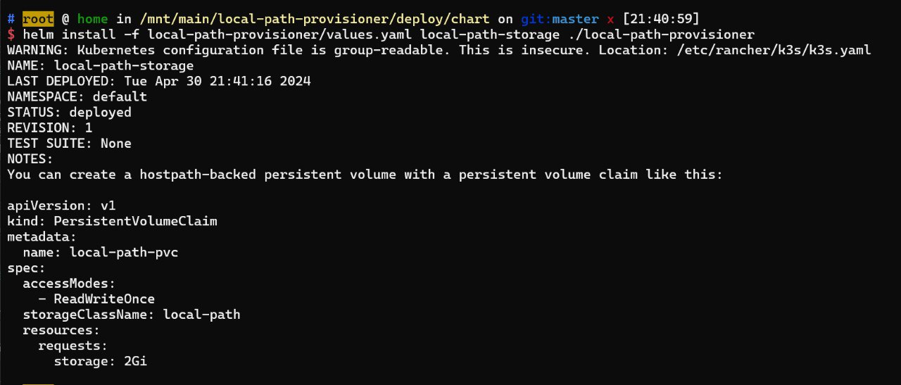

引言
K1 意为侍奴，数字 1 像一个站立的人。
K2 意为跪奴，数字 2 如一个跪着的人。
K3 意为刑奴或 sp 奴，数字 3 像一个屁股。
……
K9 意为狗奴，源于英文 canine（犬的）。
喜欢 K3S 的人多半是有点 M 成分在里面，给人推荐 K3S 的人多半是有点 S 的成分在里面。
起因
最近家里的小主机在经过重重苦难之后，终于正式寿终正寝，遂应老爹要求给家里装了一台 NAS。考虑到家里的体积要求和噪音要求，我最终选择了 3D 打印的 QNAS4，具体介绍可以看司波图这一期视频：国人设计开源 NAS 机箱，我愿称之为最佳!
我采用的配置方案为 i3-N105 + 32G，配了 4 块 HC330 10T 用作存储，2 块 SATA SSD 分别用于装系统和 L2ARC。
考虑到这台 NAS 最终是需要寄回家中，因此我并没有采用 TrueNAS Core，而是使用了更为“阳间”的 TrueNAS Scale，而这，也是一切苦难的开始。
安裝
其实，我在很久之前就已经尝试过 Scale，当时的闹得很不愉快，具体可以看这篇文章。当时我的解决方案是直接docker --net=host一把梭。但是很可惜，在如今的 TrueNAS Scale 中，这种方法已经变得不可能。
It has been communicated clearly that containerd will be used as the container engine and that means that docker may not be required at any point in the future.
大意就是为了响应 K8S 与 Docker 的脱钩（改为使用 containerd ），Scale 也将不再搭载 Docker 引擎。这下就没办法了，虽然我还有虚拟机这最后一条路，但是作为一个完美主义者，虚拟机这种浪费资源的行径是万万不能接受的！没办法，只能来硬着头皮啃一下之前一点不愿意了解的 K8S 了，毕竟人总是要跳出舒适圈的，逃离平庸的重力。
安装 TrueCharts
在动手之前，我自然也看了许多的教程，相应地也了解到，官方自带镜像源中的软件数量是远远不够的。幸好一个第三方软件源TrueCharts提供了许多常用软件的支持，并在此之上搭建了一整套相对完善的软件生态。官网指路 ☞：https://truecharts.org/scale/
另外要吐槽一下，也不知道是网站重构还是怎么的，Google 搜到的TrueCharts文档大部分都是失效的，点进去 404，需要自己去上面的文档目录里面手动搜索，非常恶心：
添加目录非常简单，只需要在应用管理面页面点击探索应用程序-管理目录-添加即可，按照下图方式填写即可：
注意：如果网络条件不好的话，可能需要钩上强制创建，否则会慢到怀疑人生。
安装必要软件
添加完目录之后，应该就可以在应用列表里里面看到TrueCharts的应用了。官方源和TrueCharts存在许多同名的软件，这个时候便需要通过下方的 Tag 来进行区分。
TrueCharts的软件有一些奇怪的依赖顺序，必须按照依赖顺序安装，否则必定失败。我这里列出了我安装的软件的依赖顺序，供参考：
Prometheus-operator
首先是最迷惑的玩意儿，必须安装Prometheus-operator，虽然我知道prometheus是一个监控软件，但是我实在不知道安装这个有啥用，让你装就装吧。
配置
这个软件没有任何配置项，装就完事了。
cloudnative-pg
这个稍微能明白一点，字面意思也能明白，就是一个 PostgreSQL 数据库，只不过是云原生的版本。只能说你们 K8S 太云原生了 😷，连数据库都要单独搞一个。
配置
这个软件也没有任何配置项，直接装就完事了
cert-manager
cert-manager 是一个证书生命周期管理系统，支持证书的申请、部署等功能。您可以使用 cert-manager 颁发 ASM 网关的证书，从而可以使用 HTTPS 协议通过 ASM 网关访问服务，保证数据传输的安全。
听不懂吧，听不懂就对了，我也不懂。总之这是集群中常用的证书管理器，用于自动化证书的申请和更新。通常在企业的环境中会使用它来签发自签名证书，这里我们需要使用它来签发 https 证书。
配置
这个软件只有一个配置，别改他，保持默认就行了。
clusterissuer
安装完证书管理器之后，我们还需要告诉它如何签发证书。这个工具通常被称作Issuer/ClusterIssuer，二者的区别是Issuer只能用来签发自身所在namespace下的证书，ClusterIssuer可以签发任意namespace下的证书。这里我们安装的是ClusterIssuer，因为我们需要签发的证书是全局的，直接在应用列表中搜索clusterissuer即可。
配置
clusterissuer的配置项需要稍微复杂一些了，配置文件一共分为三部分：ACME Issuer，Certificate Authority Issuer，SelfSigned Issuer，接下来会分别介绍他们的作用：
ACME Issuer，使用 ACME 协议签发证书，和acme.sh的用法区别不大，只支持 DNS 验证方式，因此需要配置好 DNS 服务商的 API。Certificate Authority Issuer，用于签发 CA 证书使用。SelfSigned Issuer，自签名证书相关配置。
由于我们签发的证书主要给浏览器使用，因此这里主要讲ACME Issuer，剩下的两种直接取消勾选enable，读者有能力的可以自己研究。
配置页面大概长着这个样：
逐条说一下配置的含义：
- 名称。随便起一个，但是后面要用所以这里需要记住。
Type or DNS-Provider。这里需要选择你的 DNS 服务商，我这里选择的是Cloudflare。- 服务器。可以理解为证书签发商，我这里选的是
Let's Encrypt，理论上也支持ZeroSSL。 电子邮件。用于接收证书相关的通知。Cloudflare API Token。 这个名称非常有歧义，总之是专指在这个页面生成的 Token，Token 的范围记得要选择All zones。
Traefik
K8S 中的 Nginx，用于反向代理，在这个语境中也被称为Ingress。很久以前 Xice 就给我推荐过这个软件，但是当时我还处在apt install nginx的阶段，再加上对 go 编写软件的性能质疑（确实很垃圾），一直没有去尝试过。
另外一个勘误：我在上篇文章中提到 K3S 没法绑定9000以下的端口，这其实是不对的。对于普通软件确实不支持，但是对于这个软件是特例，它甚至可以绑定:443。
由于traefik会占用80和443端口，因此需要先修改 Web UI 的默认监听端口，可以在系统设置-常规-GUI中修改，建议修改为81、444。
配置
traefik的配置项非常多，这里需要分节来讲，没有提到的部分保持默认即可。
服务
首先是服务选项卡，在你的设备上可能写的是Services：
Main Service
这里说的主服务指的是traefik服务本身，也就是9000端口上的那个 dashboard。
Service Type，这里需要选择端口暴露类型，如果你的服务需要走反向代理，直接选择ClusterIP即可，否则请选择LoadBalancer，后者等价于 docker 里的-p参数。由于那个 dashboard 没有卵用，也没有反代的价值，因此这里我选择的是LoadBalancer。Entrypoints Port，这里指的是上面提到的 dashboard 的端口，默认9000不动即可。
TCP Service
这里才是我们说的对外暴露的两个端口，因此这里Service Type必须选择LoadBalancer。
这里看起来配置多，但是其实没啥可配置的，就照着写就行了：
这样我们就得到了两个Entrypoint，分别名为web和websecure，分别对应80和443端口。
如果你还有别的需求，例如同时监听8443，在下面还可以添加更多的Entrypoint。
关于转发头部分，这里默认是白名单，填写起来太费劲了，因此我直接勾选了Insecure Mode，看个人需求就好。
Ingress
这里如果你想反代 dashboard 可以配置，但是因为前面说到的原因，我这里没有配置。
Middleware
traefik的中间件配置是全局的，非常傻逼，后面会提到，这里我只配置了一个Real IP中间件，随便起个名字就行， 我这里叫x-real-ip
全部保存之后 traefik应该能正常启动，至此，前置依赖安装完毕。
应用软件
当干到这里，啥也没干我已经安装了 5 个服务，8 个 pod 了。。。我已经陷入了深深的自我怀疑之中：我只是为了下个 BT 看个电视，为什么需要如此大动干戈？ TrueNAS 是不是脑子进水了，给家用引入 K8S？
不过既然已经到了这一步，那就继续下去吧。
一般应用配置——以 qbittorrent 为例
需要安装的第一个软件自然是qbittorrent，毕竟 BT 下载是一切的核心。直接在应用目录中搜索即可，注意不要下到了TrueNAS源的同名软件，要下载黄色的那个。
配置
服务
首先是服务选项卡，qbt 有 2 个端口，一个是 WebUI 界面，一个是下载端口，这里需要分别配置：
Main Service
这个就是 WebUI 界面的配置了，我们需要把服务藏在反向代理后面，因此Service Type选择ClusterIP，端口号不重要，保持默认就行。
Torrent Service
这个就是下载端口的配置了，这里要根据你在 qbt 设置里面配置的端口号来修改，由于默认的端口号6881为大多数 PT 站禁用，因此必须因人而异地选择；此外由于需要检测端口监听状况来判断服务是否 ready，也不能乱填，这点还请注意。BT 服务需要接收来自他人的传入链接，因此Service Type要选择LoadBalancer。
更新：填了也没卵用，开不开都行
持久化
K8S 的服务是无状态的，但是我们实际使用的软件这么肯定不行，因此需要配置持久化存储。
通常一个软件具有多个存储配置，分别用于存放不同的数据（例如配置文件，缓存，用户数据等），反映在 TrueNAS WebUI 中则为多个 Storage 配置项目。
PVC(Persistent Volumes)，与 docker 的 volume 类似，在 k8s 的升级，重启，回滚过程中都不会发生改变。Host Path，映射一个主机的目录emptyDir，类似/tmp的内存文件系统，重启就没NFS Share/iSCSI Share，字面意思，挂载一个远程的共享盘
由于App Config Storage的路径是固定的，因此我只需要选择主机上的路径即可，无需手动指定挂载点；除此之外我还添加了一个额外的存储，挂载到容器的/downloads目录下，用于保存下载的文件。
网络
由于 K3S 对 IPv6 的支持一坨，实在想不明白怎么让他支持 IPv6，因此这里我直接透传了网卡，走 DHCP，这样就能保证 qbt 能正常接收到 v6 入站了。
Ingress
这部分就是重头戏了，涉及到如何配置反向代理。这里首先我们需要开启 Ingress，添加一个主机，填写你需要的域名：
Integration
切换到integration选项，勾选enable traefik，启用反向代理。在Entrypoints选项中增加前面提到的Entrypoint，我这里只填写了 https 对应的websecure。
随后增加中间件，填写前面注册的中间件名字x-real-ip，这样就能保证 qbt 能正确获取到用户的真实 IP。
在最下方，勾选上certManager，输入在clusterissuer中配置的 issuer 名称。
最后点击提交，等待容器启动与证书签发，如无意外，过一会打开你配置的域名就能看到带 https 的 qbt 的 WebUI 了。
Prefix 应用配置——syncthing
这里我需要部署的软件是syncthing，这个软件是一个 P2P 同步软件，可以用于同步文件夹。
与qbittorrent不同的是，syncthing我需要部署在一个子目录下，形如http://example.com/syncthing/，为了达成这个目的，需要进行一些额外的配置。
配置
Ingress
前面大部分配置和qbittorrent没有什么区别，主要的区别还是在Ingress这部分：
在这里Prefix填写需要的 subpath:/syncthing/，这样对于所有满足前缀匹配/syncthing/的路由均会被路由至syncthing所在的容器。然而，如果只是这样做，只会收获一个大大的 404 错误。
上述的路由过程可以理解为：
https://example.com/syncthing/ => traefik => http://172.16.1.158/syncthing/
很显然，对于Syncthing的容器，是无法找到这个路径上的任何资源的，因此我们这里需要增加一个中间件。
切换到 traefik 的编辑页面，定位到Middlewares，增加一个stripPrefixRegex中间件：
然后回到 syncthing 的 ingress 配置页面，增加这个中间件：
这里又体现出了这个配置页面的傻逼之处：中间件的声明和使用是分离的。
我们来设想一个长场景：在你编辑到一半的时候如果你突然想要增加中间件，于是你切换到了 traefik， 在长长的列表之间找到你要的中间件，添加；然后你会突然发现之前编辑了半天的配置没法保存，所有的配置要再来一遍。
这个过程，在我摸索的过程中至少重复了 6，7 次！
另外，不知道是不是做成下拉框会要了他们母亲的命，所有的这一切都没有提示，因此只要你的中间件有一点拼写错误，都无法完成添加。
总之，在添加完上述的中间件后，traefik 会按照你之前写的规则 strip 掉路径，这样就可以正常访问了：
https://example.com/syncthing/ => traefik => stripPrefixRegex => http://172.16.1.158/
效果如下：
顺便说一句，前面这么多复杂、需要来回切换的配置在 Nginx 中可能就一小段：
1 | location /syncthing/ { |
孰优孰劣，不言而喻。
Homepage
后来某一天在闲逛时，突然发现在服务集成的下方还有一个选项:Homepage
根据其官网的效果图和描述，看起来是一个非常酷炫的主页
接入方法也非常简单，直接打勾，填写分组即可。
对于部分软件，还提供了 Widget 选项，通过填写软件内部的 API Key 即可将部分信息透传在 Homepage 主页上，具体可以看 TrueCharts 提供的例子。
最终效果：
安装这个之后相当于给 NAS 上所有的服务添加了快捷方式，非常适合给家里的长辈使用，再也不用给老爹添加一大堆快捷方式了。
遇到的坑
看了前面的这些，是不是觉得还挺顺利的？但是这些有别忘了一个前提，前面的这些都是我在官方文档失效，TrueNAS 更新的情况下，一点点根据 Reddit 和 Youtube 上的视频教程摸索出来的。如果你觉得这些不够苦痛，那么下面的就足够你喝一壶了。
PVC 无法使用
前面提到了，应用的持久化中有一种存储类型叫PVC，由于不用指定存储路径，因此非常方便。
但是其实早在安装syncthing的时候我便遇到了一个问题：使用 PVC 的容器无法启动。具体报错信息为:no persistent volumes available for this claim and no storage class is set
顺便说一句，这个傻逼的报错只能从那个小小的“相关的 Kubernetes 事件”中看到：
而这个框能容纳的信息非常少，你必须不停往下滑动滚动条，然而这个框他只支持鼠标滚轮，因此你的滚动速度还严重受限。更气人的是，它甚至每 3 秒就会刷新一次，所以你好不容易滚到下面的消息又会马上重置，非常地令人火大。
回到正题，遇到这种难以解决的，不熟悉的错误，我第一反应是当然是回避。惹不起我还躲不起吗？因此不论是 qbittorrent 还是 syncthing，我都使用了host path类型来存储内容。
本以为就能当一切无事发生地混过去，然而大抵是老天要我逃脱平庸的重力吧，在安装photprism的时候，遇到了一个无法回避的问题：它竟然使用了一个页面上没有的存储，而且强制类型是 PVC！
这个photoprism-mariadb-data根本没有标记在配置项目中，因此无法调整他的存储类型。
这个问题在网上不算罕见，随便一搜都能遇到很多，但是绝大多数人都是使用的完整 K8S，如果加上我这个 TrueNAS 限定，那则是一篇文档都没有！原来这就是得罕见病的感受吗~
网上没有解答，那就只能自己动手丰衣足食了。先来看看这个报错吧，字面意思似乎是缺少一个storage class，那么这个又是什么呢？通过一通搜索引擎之后：
Kubernetes 提供一种自动创建 PV 的机制，叫 StorageClass，它的作用就是创建 PV 的模板。
看的不太明白，但是看了许多例子，有什么nfs storage class，host path storage class…似乎这个东西是指导 PV 创建的！
仔细回想一下，在我们选择 PVC 的时候，系统并没有让我们提供任何信息，那么数据最终保存在哪里呢？系统可没办法帮我们决定数据保存在哪个盘上，这可能就是问题的关键！
来看看我们目前已经有哪些storage class吧：
1 | k3s kubectl get storageclass |
哈哈，尴尬……不过这个应该就是问题的根源了，于是我用k3s no storageclass开始了搜索，并最终定位到了这么一篇 issue
k3s doesn’t come with a default storage class. We are looking at including https://github.com/rancher/local-path-provisioner by default which just uses local disk, such that PVCs will at least work by default. You can try that storage class or install another third party one. More info here
又是精简版惹的祸！我算是知道为啥 NAS 群友都让我珍爱生命远离 K3S 了。
在上面那个 issue 中，网友们推荐了一个 local-path-provisioner ，我按照网友们的指引克隆了仓库，并自学了一通helm的用法之后：
1 | helm install -f localpath-provisioner/values.yaml local-path-storage ./local-path-provisioner |

执行完后再来试试：
看起来 OK 了！回到 GUI 中，photoprism已经正常启动了，这个问题大抵是解决了。
PS：黑色幽默的是，我花费了这么大的精力最后还是抛弃了photoprism，因为这个沙屌玩意儿竟然没有自动扫描！
罢了，权当学习 K8S 吧，照片管理目前用的是Photoview，虽然简陋但是能用。
正确的解法
多日以后，这篇文章已经快落成了，我才在一个偶然的机会得知了正确的做法：安装OpenEBS即可。
而这一切都隐藏在 TrueCharts 那该死的 404 的文档之中：https://truecharts.org/scale/#openebs-setup
没文档，真坑人。
路径转发
前面提到，syncthing 使用的路径为/syncthing/，因此当使用/syncthing访问时，路由其实并不会命中。通常我们会配置一个 rewrite，将不带/的路径 302 至带/的路径上，在 Nginx 上这非常容易：
1 | location /syncthing |
但是在 traefik 上，我只有一个redirectRegex中间件可以用。哪怕我穷尽毕生所学正则表达式，尝试了各种姿势，我也没能写出来 work 的配置。写出来的配置不是无限加/，就是 css 和 js 无法加载，所以我放弃了。如果有人能在评论区告诉我正确的写法，我将感激不尽。
Homepage
前面提到了，homepage 为了展示 widget 需要填写软件的 API key。
对于jellyfin这种天然支持 API Token 的软件自然不消多说，但是对于qbittorrent这种采用用户名密码的可就犯了难，输入框只有一个，但是需要输入两个内容，该怎么办呢？
好在 homepage 在他的官网提供了不同软件的配置文件例子，其中qbittorrent的部分是这么写的：
1 | widget: |
再结合 homepage 配置选项中有一个奇怪的“密钥”，其实答案就已经呼之欲出了：所谓“密钥”就是Key的拙劣翻译，因此只需要按照 K-V 形式书写配置文件即可：
保存之后，毫不意外地正常工作：
其他的奇怪问题
在jellfin这种多容器的服务中，经常会遇到莫名其妙的容器启动失败问题，导致jellyfin的服务状态一直不健康：
1 | Back-off restarting failed container jellyfin in pod jellyfin-broadcastproxy-lb4pk_ix-jellyfin(0cea11c3-39e4-4e41-871d-ee72eb762242) |
进入容器看日志也没看出来个所以然，最后是发现存在野实例的问题：
使用k3s kubectl --namespace ix-jellyfin get pods命令获取 pod 列表，预期只有 2 个实例的服务却获取到了 3 个。
于是尝试将多出来的实例删除：
1 | k3s kubectl --namespace ix-jellyfin delete pods jellyfin-broadcastproxy-8g2v8\ |
成功删除后恢复正常。
总结
这次 NAS 装机环境难度远超我的预料，在配置软件上耗费的的时间（接近一周）大大超过了安装硬件的时间（一个晚上）。
虽然通过这种复杂的配置，我收获了一个白屏化的 NAS 界面，看似一切操作都可以在 GUI 上完成，但是其并没有实现 100%的白屏化，PVC 等问题依旧需要在终端进行处理，更何况 K8S 命令行陡峭的学习曲线更是极大地抵消了白屏化带来的便捷。最终效果也并没有比手工维护的 TrueNAS Core 好到哪儿去，而后者我可以在一个晚上便完成所有的部署操作。
我在整个过程中遇到的最大的问题便是相关资料的缺乏，因此我将我的经历编写成本文，如果能够给后来者提供一些便利，那便不虚此文了。
では、諸君は。